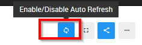
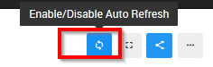

Hi,
maybe im wrong, but this button on dashboard:

should automaticly reload the dashboards right? its not working in my side, but this is “main” feature why i want to use dashboards…
what could be wrong?
Hi,
maybe im wrong, but this button on dashboard:

should automaticly reload the dashboards right? its not working in my side, but this is “main” feature why i want to use dashboards…
what could be wrong?
The current implementation of this feature is a bit confusing. What it does is if the query has a refresh schedule, it will refresh its widget in the dashboard based on this refresh schedule.
It seems that what most people expect it to do is to just refresh the queries regardless… I’m planning to revise this feature and allow to refresh the widgets on the dashboard regardless of the query refresh schedule.
mhh i dont understand. i have query refresh set to every minute, but dashbaord widgets are not reloading…
I’m experiencing the same thing. All three queries on my dashboard are set to refresh every minute, but the dashboard itself does not refresh.
Testing in Safari on macOS.
There was a bug with the dashboard refresh which was fixed in version 0.12. Also in v1.0 we will have a normal refresh button to refresh all the dashboard widgets. 
yes i see, but two points:
refresh should be default enabled
Public Access to the dashboard is not auto refreshing 
Hi!
I would also like to see the feature the @q16marvin mentioned about having auto-refresh on Publicly accessed dashboard. 
A lot of our users would benefit greatly from this single feature.
Any new updates regarding auto refresh. If a dashboard is opened then a cache output is being shown on the panels rather than recently executed and updated data.This requires manual refreshing every time a dashboard being opened.
Same here. We just noticed today that our public dashboard is not automatically refreshing.
Is there a GitHub issue to track this feature request?
hi, im little confused… i mean the whole redash solution is extremly nice, but without this feature its useless for me… so is there any plan that this feature is coming?
Totally agree with everyone. Without the public dashboard auto-refresh, it becomes useless for me.
Nothing to be confused about. Apparently it’s less important to others than it is to you. 
We gradually work towards a new implementation of sharing and embedding in Redash. The first step is being able to safely to run queries with parameters. Once that’s possible, we will start updating the permissions model and relevant APIs, which eventually will make it possible to implement refresh for public dashboards.
Here is discussion about this feature. https://github.com/getredash/redash/issues/2882 .And looks that this is already supported using URL parameter: &refresh=60
The first refresh will happen only after 60 seconds. But it means users should just seat and wait 60 seconds in order to see fresh information.  But how I could refresh dashboard right after opening the page?
But how I could refresh dashboard right after opening the page?